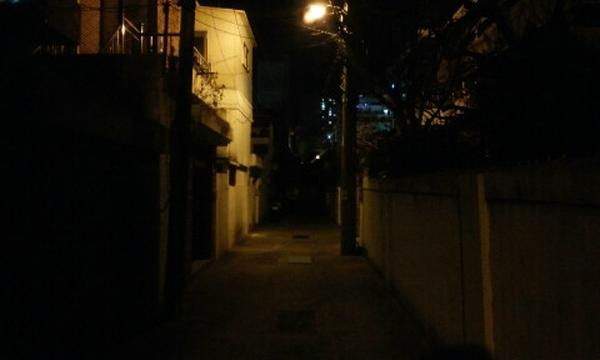

그 날도 어김없이 자신이 사랑하는 사람이 자신을 버리진 않을까 라는 생각으로 스스로를 고문하던 A...
여자친구와 함께 있었지만 항상 여자친구가 언제 화낼지 모른다는 생각에 불안하기만 하다.
그 때 여자친구와 함께 근처 공원을 여자친구의 강아지 뽀롱이를 데리고 산책을 가기고 한다.
공원까지 가는 길은 꽤나 후미지다

약간 이런 느낌...
그래서 그 길을 걷다보면 무서운 생각도 가끔 든다.
저번에 한번은 주택가에 창문에 세워져있던 청소기를 여자친구가 여자가 서 있는 것으로 오해해서 간 떨어질 뻔 했던 적도 있다.
어쨋든 그 후미진 골목을 걸어오는데 갑자기 강도가 칼을 들고 우리를 덮치면 어쩌지? 라는 생각을 하게 됐다.
그 때, 여자친구 대신 내가 죽어야겠다. 라는 생각이 들었다.
왜 그런 생각이 들었는지는 잘 모르겠다.
근데 분명한 것은 굉장히 행복한 와중에 그런 생각이 들었다는 것이다.